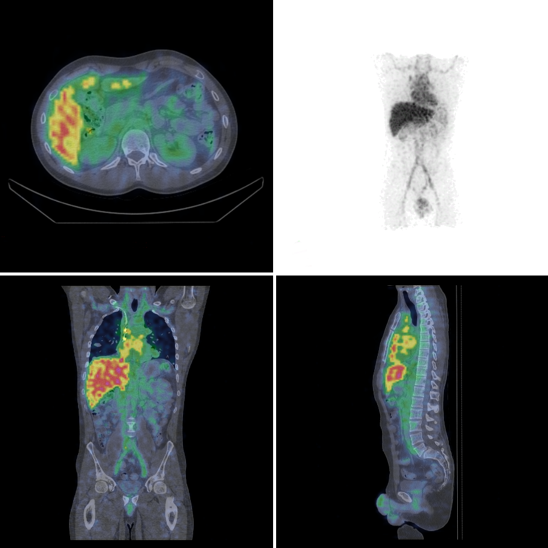

Numido
Dosimetry solutions for radionuclide therapy
Problems
The European Directive 2013/59/Euratom mandates that personalized dosimetry-based treatment planning is put in place by February 2018
Personalized dosimetry is important for the evaluation of target-to-healthy tissue dose ratio, for selecting the most appropriate patients, for adapting injected activity ...
Many shortfalls: reconstruction parameters, scatter correction, image calibration, attenuation correction, partial volume effect, etc …
Every clinical situation is specific: software should be tailored to the need, not the other way around.
Our solution
Image acquisition, processing and dose computation expertise with state of the art methods: deformable image registration, voxel-based processing, Monte-Carlo simulation ...
We work in close collaboration with medical physicists and nuclear physicians.
Easy remote access for clinicians.
No installation, no additional software: web-based solution.
Guaranteed security: Intranet pages.
Whatever the radionuclide: 131I, 90Y, 99mTc, 18F, ...
Clinical and pre-clinical studies with PET, SPECT, CT, MRI, ... technologies
Example
Radiolabeled anti-body
Full report A 90Y radiolabeled monoclonal antibody targeting synovial sarcoma (SS) was used to treat relapsing SS metastases.
Theranostic procedure: in case of significant tumor uptake and favorable biodistribution obtained on SPECT images from 111In-labeled injection, patients were treated with 90Y.
We provided comprehensive Monte-Carlo 3D dosimetry from time sequence of SPECT images. Time-activity curves extracted from 111In-SPECT/CT in various organs and tumors were extracted and integrated. The estimated absorbed doses in normal tissues were compared to biological side effects and to the admitted maximal tolerated absorbed dose in normal organs. Results in the tumors were also compared to disease evolution.
Lyon, France